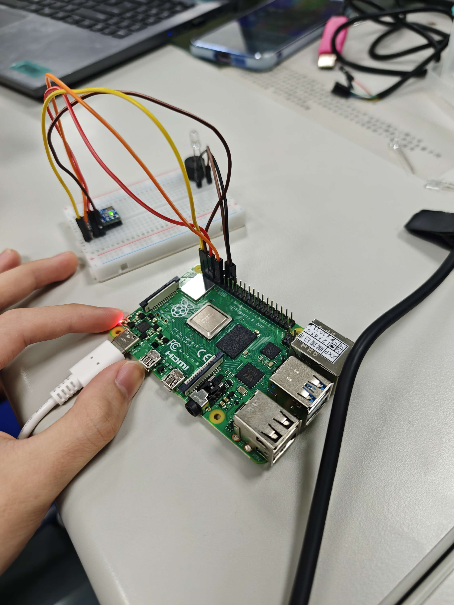
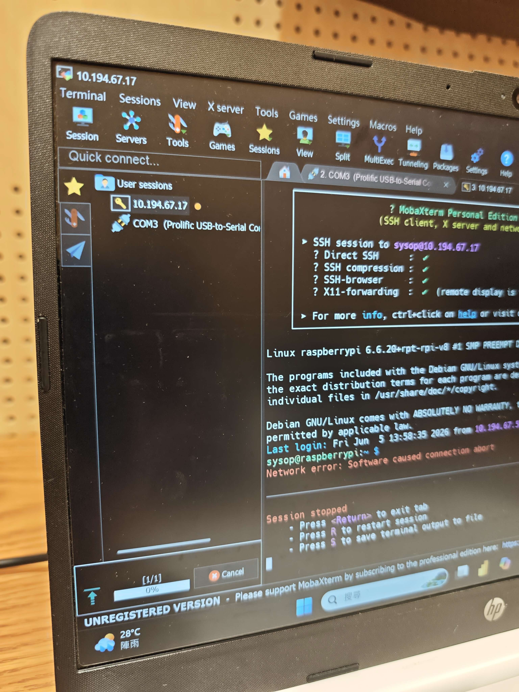
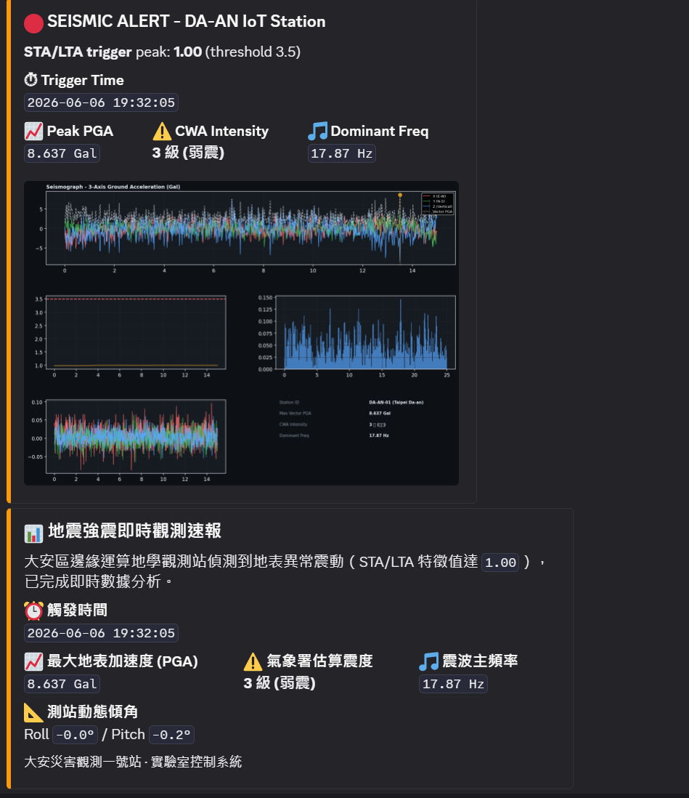
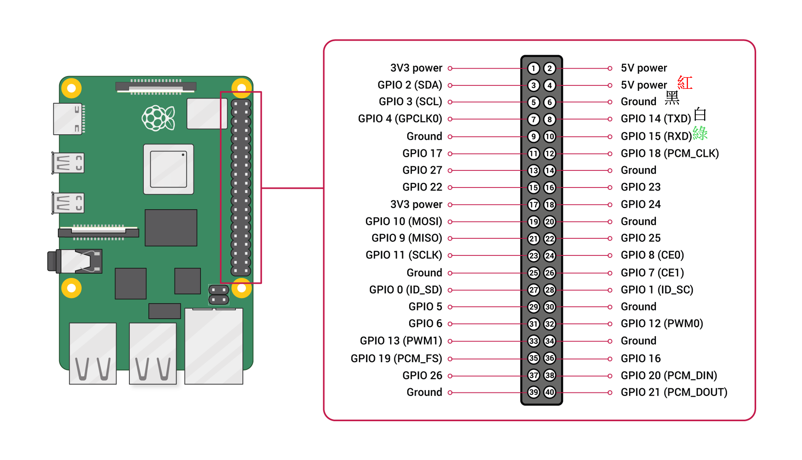

基於 Raspberry Pi 與 MPU6050 之簡易地震觀測站與即時速報系統
傳統地震觀測站造價高昂，難以在校園等局部區域進行高密度的部署。本專題利用平價微型電腦 Raspberry Pi 結合 MPU6050 六軸感測器，建構低成本的微型地震觀測站，從「邊緣端感測」到「雲端警報派發」(Edge-to-Cloud)，完成了完整的物聯網應用。
核心目標包含：
從硬體接線到軟體程式部署，整個過程充滿了挑戰與學習。以下是我們實作過程中的珍貴照片：



點擊下方的腳位按鈕，查看 Raspberry Pi GPIO 各個腳位的功能與在本專案中的接線方式。

點擊上方的腳位按鈕來查看詳細說明！
調整下方的滑桿參數，模擬地震波到達時 STA/LTA 演算法是如何偵測到地震事件的。觀察當「短時窗能量」急遽上升並超過「門檻值」的那一瞬間，系統就會觸發警報！
本系統採用 STA/LTA (Short-Term Average / Long-Term Average) 演算法進行事件觸發。該演算法計算短時窗（反映突發能量）的均值，與長時窗（反映背景雜訊）的均值，當兩者之比值突破門檻值（Threshold = 3.5）時，系統即判定發生異常震動並啟動記錄與推播。
將 X、Y、Z 三軸加速度向量進行合成：
扣除重力加速度後取最大絕對加速度，轉換為 Gal 單位，並依據中央氣象署 (CWA) 震度分級表估算震度。
透過 FFT 將時域訊號轉換至頻域，找出震波能量最集中的主頻率。通常構造地震的主頻較低（1~10 Hz），藉此可輔助過濾非地震的假觸發。
當 STA/LTA 觸發後，系統會在一秒內完成波形收集，並利用 Python 的 Matplotlib 渲染高品質圖表，最後透過 Webhook API 傳送至 Discord。測站名稱：DA-AN IoT Station（大安災害觀測一號站）。
在製作與測試儀器時，我們因為環境限制，全程都是連著同學的手機網路熱點進行開發。這時我們突發奇想，想看看能不能透過網路設定，把目前「測站」的位置自動標示出來，當作觀測點的座標：
「結果抓取產生的定位，竟然完全不是我們實際所在的教室位置，而是同學所使用的電信網路『中央基地台』的機房位置！」
這個有趣的插曲讓我們學到了一課：依賴手機網路 IP 進行地理定位時，往往只能抓到 ISP 業者的實體機房或基地台節點。若要架設高精度的地震觀測站，未來勢必還是得外加真實的 GPS 模組來獲取經緯度！
本專題成功驗證了以 Raspberry Pi 結合 MPU6050 建構微型地震預警系統的可行性。我們克服了底層硬體的 UART 通訊排障、防止樹莓派掉壓死機等工程難題，也在軟體層面完整實作了 I2C 通訊與 STA/LTA 觸發演算法，最終整合 Discord 的即時繪圖推播功能。
未來展望：